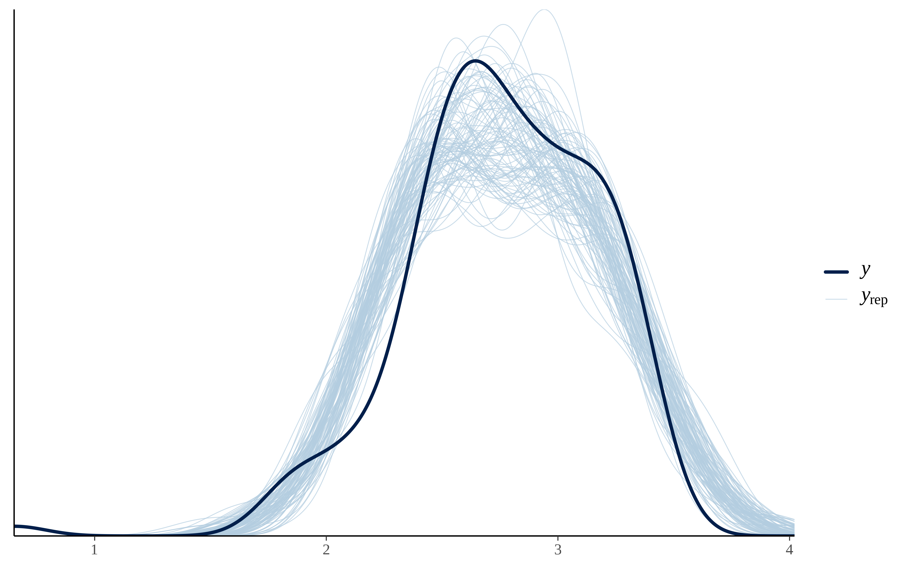
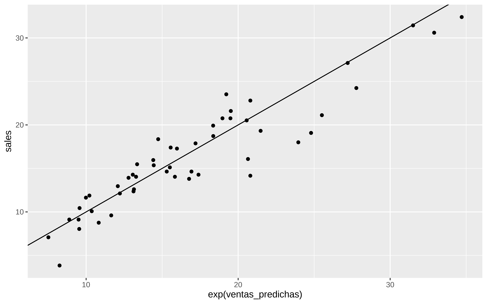
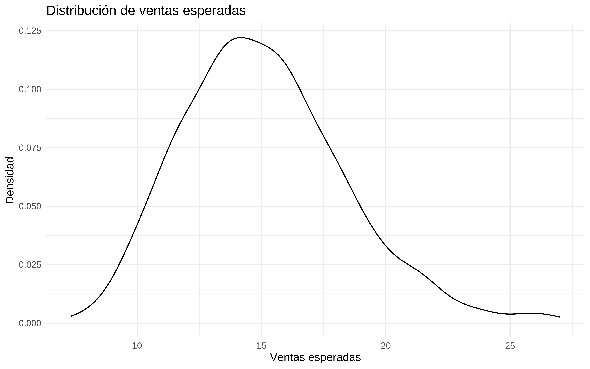
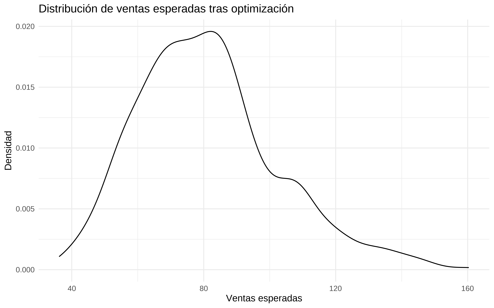
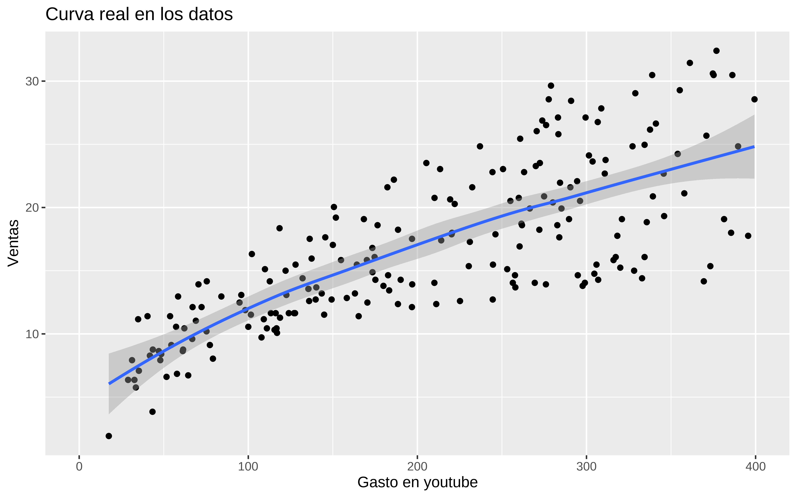
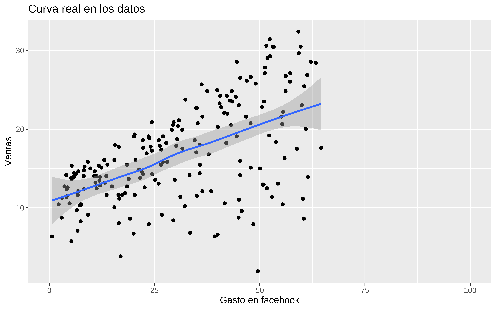
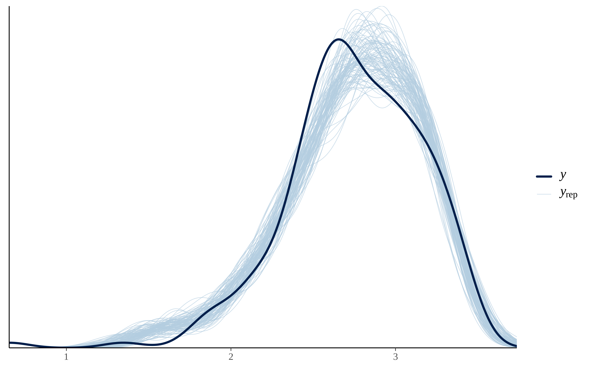

Show the code
library(datarium)
datos <- marketingHe de reconocer que mi conocimiento sobre lo que se ha dado en llamar el Marketing/Media Mix Modelling es más bien escaso por no decir que inexistente. No obstante, una reunión el otro día en el trabajo hizo despertar mi curiosidad. Así que voy a contar un poco lo que he aprendido.
Pues en teoría es un intento de inferencia causal, que intenta responder a la pregunta de ¿qué pasa con las ventas si aumento mi inversión publicitaria en un canal a ? ¿ Y si cambio por completo el mix de gasto en publicidad? ¿Si tengo un presupuesto Z, cuál es la forma óptima de asignar gasto a cada medio?
Bien, pues para poder contestar a estas preguntas lo primero de todo es asumir que las ventas están relacionadas e incluso son causa de la inversión en publicidad. Suena a palabras mayores, desde luego, pero que le vamos a hacer, esto es lo que hay.
Uno podría (y debería) pintar un DAG que expresase lo que creemos saber sobre la relación entre las variables. Quizá el gasto en radio influya en que el gasto en google sea más eficaz, y cosas así. Pero como yo estoy empezando a aprender sobre este tema, voy a partir del supuesto, de que una regresión múltiple me permite expresar las relaciones causales entre las variables, y además que se dan todo el resto de supuestos para la inferencia causal y por tanto, podría interpretar los coeficientes como efectos causales. Si, ya lo sé, esto es un triple salto mortal, pero es lo que se hace todos los días en las empresas. Ya habrá tiempo de cuestionar estas cosas.
En la librería datarium tenemos unos datos de marketing que nos pueden servir
library(datarium)
datos <- marketingEstos datos son muy sencillos, son 200 filas y 4 columnas que se corresponden con la inversión publicitaria en 3 canales (youtube, facebook, newspaper) y una última columna con el monto de las ventas.
dim(datos)
#> [1] 200 4
head(datos)
#> youtube facebook newspaper sales
#> 1 276.12 45.36 83.04 26.52
#> 2 53.40 47.16 54.12 12.48
#> 3 20.64 55.08 83.16 11.16
#> 4 181.80 49.56 70.20 22.20
#> 5 216.96 12.96 70.08 15.48
#> 6 10.44 58.68 90.00 8.64Leyendo la documentación sobre este conjunto de datos se podría asumir que los datos están ordenados por fechas, voy a suponer que cada fila corresponde a una semana, así que voy a pegar una variable de semana y otra que sea simplemente del 1 al 200.
datos$fecha_arbitraria <- seq.Date(as.Date("2020-01-02"), length.out =200, by = "week")
datos$semana <- lubridate::week(datos$fecha_arbitraria)
datos$time <- 1:200
datos$mes <- lubridate::month(datos$fecha_arbitraria)
datos$anyo <- lubridate::year(datos$fecha_arbitraria)
head(datos)
#> youtube facebook newspaper sales fecha_arbitraria semana time mes anyo
#> 1 276.12 45.36 83.04 26.52 2020-01-02 1 1 1 2020
#> 2 53.40 47.16 54.12 12.48 2020-01-09 2 2 1 2020
#> 3 20.64 55.08 83.16 11.16 2020-01-16 3 3 1 2020
#> 4 181.80 49.56 70.20 22.20 2020-01-23 4 4 1 2020
#> 5 216.96 12.96 70.08 15.48 2020-01-30 5 5 1 2020
#> 6 10.44 58.68 90.00 8.64 2020-02-06 6 6 2 2020Pintamos
library(tidyverse)
datos %>%
ggplot(aes(fecha_arbitraria, sales)) +
geom_point() +
geom_line()
En estas cosas de marketing mix modelling hay algunas cosillas peculiares. La primera es que se asume, y no me parece mal, que en un instante t la inversión publicitaria que “causa” las ventas no es sólo la del instante t sino que también hay cierto efecto “remanente” de la inversión pasada. Y por tanto en vez de considerar la variable tal cual en un instante t se considera algo como
\[ X_{Adstock} = X_t + \lambda_{1} \times X_{t-1} + ...\lambda_{n} \times X_{t-n} \]
pero además vamos a poner un período de olvido de 2 .
En R podemos hacerlo de la siguiente forma. Por ejemplo para facebook
Se supone que los datos están ordenados de fecha más antigua a más reciente. El criterio de poner set_rate_fb = 0.1 ha sido arbitrario, pero se podría estimar.
#set adstock fb rate
set_rate_fb <- 0.1
set_memory <- 2
get_adstock_fb <- rep(set_rate_fb, set_memory+1) ^ c(0:set_memory)
ads_fb <- stats::filter(c(rep(0, set_memory), datos$facebook), get_adstock_fb, method="convolution")
ads_fb <- ads_fb[!is.na(ads_fb)]
head(datos$facebook)
#> [1] 45.36 47.16 55.08 49.56 12.96 58.68
head(ads_fb)
#> [1] 45.3600 51.6960 60.2496 55.5396 18.4668 60.4716
plot(seq(1,length(datos$facebook)), datos$facebook, type="h",
main = "Adstocked Facebook",
xlab="Time (Weeks)", ylab="Facebook",
ylim=c(0, max(c(datos$facebook, ads_fb))),
frame.plot=FALSE)
lines(ads_fb, col="blue")
Hacemos lo mismo para resto de canales, con diferente valor
#set adstock youtube rate
set_rate_yt <- 0.15
set_memory <- 2
get_adstock_youtube <- rep(set_rate_yt, set_memory+1) ^ c(0:set_memory)
#set adstock news rate
set_rate_news <- 0.25
set_memory <- 2
get_adstock_news <- rep(set_rate_news, set_memory+1) ^ c(0:set_memory)
ads_youtube <- stats::filter(c(rep(0, set_memory), datos$youtube), get_adstock_youtube, method="convolution")
ads_youtube <- ads_youtube[!is.na(ads_youtube)]
#adstocked newpaper
ads_news <- stats::filter(c(rep(0, set_memory), datos$newspaper), get_adstock_news, method="convolution")
ads_news <- ads_news[!is.na(ads_news)]
#plot
datos <- cbind(datos, ads_fb, ads_youtube, ads_news)
head(datos)
#> youtube facebook newspaper sales fecha_arbitraria semana time mes anyo
#> 1 276.12 45.36 83.04 26.52 2020-01-02 1 1 1 2020
#> 2 53.40 47.16 54.12 12.48 2020-01-09 2 2 1 2020
#> 3 20.64 55.08 83.16 11.16 2020-01-16 3 3 1 2020
#> 4 181.80 49.56 70.20 22.20 2020-01-23 4 4 1 2020
#> 5 216.96 12.96 70.08 15.48 2020-01-30 5 5 1 2020
#> 6 10.44 58.68 90.00 8.64 2020-02-06 6 6 2 2020
#> ads_fb ads_youtube ads_news
#> 1 45.3600 276.1200 83.0400
#> 2 51.6960 94.8180 74.8800
#> 3 60.2496 34.8627 101.8800
#> 4 55.5396 186.0975 94.3725
#> 5 18.4668 244.6944 92.8275
#> 6 60.4716 47.0745 111.9075Pues en esta primera parte de MMM estilo compadre se trata simplemente de estimar las ventas en base al tiempo y al adstock, es decir, un ejercicio de estimación de series temporales. De hecho, las consultoras que se dedican a estos temas hacen una serie de modelos lineales, a veces encadenados (y sin ajustar conjuntamente, lo cual es un error importante), y algunas asumen modelos lineales sin Intercept , es decir, tienen la asunción fuerte (y errónea) que todas las ventas se deben exclusivamente a variables modeladas y que a inversión 0, las ventas no existen. Yo no voy a asumir semejante cosa, dios me libre.
Pues ya que el software lo permite, vamos a hacer un modelito, pero bayesiano.
library(cmdstanr)
library(brms)En vez de modelar las ventas , modelo su logaritmo neperiano, por qué? porque me da la gana, y porque a veces así se consiguen mejores resultados. En realidad habría que probar ambas cosas.
También meto un término de splines, y entreno con los primeros 150 datos y dejo de test los últimos 50
train <- datos[1:150, ]
test <- datos[151:200, ]
mod_splines <- brm(log(sales) ~ ads_fb + ads_youtube + ads_news + s(time, k = 10),
data = train,
family = gaussian(), backend = "cmdstanr",cores = 4, file = here::here("2024/05/mod_splines") )
summary(mod_splines)
#> Family: gaussian
#> Links: mu = identity; sigma = identity
#> Formula: log(sales) ~ ads_fb + ads_youtube + ads_news + s(time, k = 10)
#> Data: train (Number of observations: 150)
#> Draws: 4 chains, each with iter = 2000; warmup = 1000; thin = 1;
#> total post-warmup draws = 4000
#>
#> Smoothing Spline Hyperparameters:
#> Estimate Est.Error l-95% CI u-95% CI Rhat Bulk_ESS Tail_ESS
#> sds(stime_1) 0.23 0.24 0.01 0.90 1.00 1073 1853
#>
#> Regression Coefficients:
#> Estimate Est.Error l-95% CI u-95% CI Rhat Bulk_ESS Tail_ESS
#> Intercept 1.82 0.05 1.72 1.92 1.00 4104 3225
#> ads_fb 0.01 0.00 0.01 0.01 1.00 4061 2383
#> ads_youtube 0.00 0.00 0.00 0.00 1.00 4301 2832
#> ads_news 0.00 0.00 -0.00 0.00 1.00 4466 3017
#> stime_1 0.06 0.50 -0.86 1.33 1.00 1313 1086
#>
#> Further Distributional Parameters:
#> Estimate Est.Error l-95% CI u-95% CI Rhat Bulk_ESS Tail_ESS
#> sigma 0.20 0.01 0.18 0.23 1.00 3540 2808
#>
#> Draws were sampled using sample(hmc). For each parameter, Bulk_ESS
#> and Tail_ESS are effective sample size measures, and Rhat is the potential
#> scale reduction factor on split chains (at convergence, Rhat = 1).pp_check(mod_splines, ndraws = 100)
y no tiene mala pinta.
Veamos en test
predicciones <- posterior_predict(mod_splines, newdata = test, ndraws = 1000)
predicciones_medias <- apply(predicciones, 2, mean)
test$ventas_predichas <- predicciones_medias
yardstick::rmse_vec(test$sales, exp(test$ventas_predichas))
#> [1] 2.490994
test %>%
ggplot(aes(x = exp(ventas_predichas), y = sales)) +
geom_point() +
geom_abline(intercept = 0, slope = 1)
Y bueno, ni tan mal.
Pues el tema en esto del MMM consiste ahora en encontrar cuánto hay que invertir en cada canal para optimizar las ventas , pero sujeto a unas restricciones, por ejemplo presupuestarias.
Todo esto con la asunción de que el modelo ajustado representa la verdadera relación causal y no sólo asociación.
El principal problema que yo veo a estas cosas es que si yo he entrenado con un rango de gasto histórico en un canal A, el modelo puede haber estimado que a más gasto más ventas y extrapolar mucho más allá de lo aconsejable.
Lo primero es crear una función que simule las ventas obtenidas.
Suponemos que nuestros nuevos datos irán temporalmente detrás de los datos de train, y que por tanto el adstock se ve influido por datos antiguos
simular_ventas_siguiente_periodo <- function(facebook_new, youtube_new, news_new, modelo) {
nuevo_time = max(train$time) + 1
# obtener add_stock
ads_fb <- stats::filter(c(rep(0, set_memory), train$facebook, facebook_new), get_adstock_fb, method="convolution")
ads_fb <- ads_fb[!is.na(ads_fb)]
ads_fb <- tail(ads_fb, 1)
ads_youtube <- stats::filter(c(rep(0, set_memory), train$youtube, youtube_new), get_adstock_youtube, method="convolution")
ads_youtube <- ads_youtube[!is.na(ads_youtube)]
ads_youtube <- tail(ads_youtube, 1)
ads_news <- stats::filter(c(rep(0, set_memory), train$newspaper, news_new), get_adstock_news, method="convolution")
ads_news <- ads_news[!is.na(ads_news)]
ads_news <- tail(ads_news, 1)
newdata = data.frame(ads_fb = ads_fb, ads_youtube = ads_youtube, ads_news = ads_news, time = nuevo_time)
# estimamos con el modelo
ventas_simuladas <- posterior_predict(modelo, newdata = newdata, ndraws = 500)
return(as.numeric(ventas_simuladas))
}La probamos, incrementando en 1% la media de gasto en train
facebook_new <- mean(train$facebook) * 1.01
youtube_new <- mean(train$youtube) * 1.01
news_new <- mean(train$newspaper) * 1.01
simulaciones <- simular_ventas_siguiente_periodo(facebook_new, youtube_new, news_new, mod_splines)
simulaciones %>%
as_tibble() %>%
ggplot(aes(x = exp(value))) +
geom_density() +
labs(title = "Distribución de ventas esperadas",
x = "Ventas esperadas",
y = "Densidad") +
theme_minimal()
Bien, pues ahora tenemos que construir la función a optimizar. Vamos a poner un presupuesto máximo de 450. Y en la función a optimizar añadimos una penalización alta si la suma de los valores a optimizar supera este presupuesto. Aparte de este valor máximo también vamos a poner umbrales al valor mínimo y máximo del gasto en cada canal.
funcion_objetivo <- function(facebook_new, youtube_new, news_new, modelo) {
max_suma <- 450
penalizacion <- 0
# Calcular la suma de los parámetros
suma_par <- sum(facebook_new, youtube_new, news_new)
# Si la suma de los parámetros supera el valor máximo, añadir una penalización
if (suma_par > max_suma) {
penalizacion <- 1e6 * (suma_par - max_suma)^2
}
# facebook_new <- x[1]
# youtube_new <- x[2]
# news_new <- x[3]
time <- 201
ventas_simuladas <- simular_ventas_siguiente_periodo(facebook_new, youtube_new, news_new, modelo)
# Puedes definir el ROI u otra métrica si lo prefieres
ventas_esperadas <- mean(ventas_simuladas)
return(list(Score = -ventas_esperadas + penalizacion)) # Negativo para maximizar
}(prueba <- funcion_objetivo(facebook_new, youtube_new, news_new, mod_splines))
#> $Score
#> [1] -2.706681
# las ventas serán el exp de menos el resultado
exp(-prueba$Score)
#> [1] 14.97948Ahora sería optimizar esa función con algún solver, yo voy a usar una optimización bayesiana y en paralelo
library(ParBayesianOptimization)
library(doParallel)
library(foreach)# Configurar el clúster para usar 5 núcleos
num_cores <- 5
cl <- makeCluster(num_cores)
registerDoParallel(cl)Límites de gasto. ¿Por qué pongo estos? Porque quiero, y he añadido que el mínimo en news sea 13
bounds <- list(
facebook_new = c(0, 224)
, youtube_new = c(0, 400)
, news_new = c(13, 34)
)Me creo una función parcial
f_objetivo_partial <- partial(funcion_objetivo, modelo = mod_splines)Para hacer la computación en paralelo hay que copiar las librerías y los datos y funciones en cada “conexión”, al menos para usar esta librería
clusterEvalQ(cl, {
library(ParBayesianOptimization)
library(tidyverse)
library(brms)
})
#> [[1]]
#> [1] "brms" "Rcpp"
#> [3] "lubridate" "forcats"
#> [5] "stringr" "dplyr"
#> [7] "purrr" "readr"
#> [9] "tidyr" "tibble"
#> [11] "ggplot2" "tidyverse"
#> [13] "ParBayesianOptimization" "stats"
#> [15] "graphics" "grDevices"
#> [17] "utils" "datasets"
#> [19] "methods" "base"
#>
#> [[2]]
#> [1] "brms" "Rcpp"
#> [3] "lubridate" "forcats"
#> [5] "stringr" "dplyr"
#> [7] "purrr" "readr"
#> [9] "tidyr" "tibble"
#> [11] "ggplot2" "tidyverse"
#> [13] "ParBayesianOptimization" "stats"
#> [15] "graphics" "grDevices"
#> [17] "utils" "datasets"
#> [19] "methods" "base"
#>
#> [[3]]
#> [1] "brms" "Rcpp"
#> [3] "lubridate" "forcats"
#> [5] "stringr" "dplyr"
#> [7] "purrr" "readr"
#> [9] "tidyr" "tibble"
#> [11] "ggplot2" "tidyverse"
#> [13] "ParBayesianOptimization" "stats"
#> [15] "graphics" "grDevices"
#> [17] "utils" "datasets"
#> [19] "methods" "base"
#>
#> [[4]]
#> [1] "brms" "Rcpp"
#> [3] "lubridate" "forcats"
#> [5] "stringr" "dplyr"
#> [7] "purrr" "readr"
#> [9] "tidyr" "tibble"
#> [11] "ggplot2" "tidyverse"
#> [13] "ParBayesianOptimization" "stats"
#> [15] "graphics" "grDevices"
#> [17] "utils" "datasets"
#> [19] "methods" "base"
#>
#> [[5]]
#> [1] "brms" "Rcpp"
#> [3] "lubridate" "forcats"
#> [5] "stringr" "dplyr"
#> [7] "purrr" "readr"
#> [9] "tidyr" "tibble"
#> [11] "ggplot2" "tidyverse"
#> [13] "ParBayesianOptimization" "stats"
#> [15] "graphics" "grDevices"
#> [17] "utils" "datasets"
#> [19] "methods" "base"
clusterExport(cl,c('simular_ventas_siguiente_periodo', 'train','bounds', 'funcion_objetivo','f_objetivo_partial', 'mod_splines',
'set_memory', 'get_adstock_fb', 'get_adstock_youtube',
'get_adstock_news'))Y ya podríamos optimizar
bayes_opt <- bayesOpt(
FUN = f_objetivo_partial,
bounds = bounds,
initPoints = 10,
acq = "ei",
iters.n = 200,
iters.k = 10,
kappa = 2,
eps = 0.0,
parallel = TRUE,
otherHalting = list(timeLimit = 300)
)Y los resultados
# Mostrar los resultados
print(bayes_opt)
#> Class: bayesOpt
#>
#> Epochs: 9
#> Iterations: 121
#> Average FUN Seconds: 0.25
#> Highest FUN Seconds: 0.43
#> Final Expected Improvement: 1.29451e-196
#> GP Updated: TRUE
#> Stop Status: Stopped Early. See $stopStatus
bayes_opt$scoreSummary %>%
arrange(Score)
#> Epoch Iteration facebook_new youtube_new news_new gpUtility acqOptimum
#> <num> <int> <num> <num> <num> <num> <lgcl>
#> 1: 8 109 209.0382 188.26843 34.00000 1.020609e-206 FALSE
#> 2: 8 107 205.6691 194.69657 34.00000 1.865035e-214 FALSE
#> 3: 0 7 198.7479 117.12296 20.49307 NA FALSE
#> 4: 3 49 224.0000 33.11638 13.00000 2.045357e-10 FALSE
#> 5: 3 50 224.0000 44.65494 13.00000 4.256401e-12 FALSE
#> ---
#> 117: 2 32 220.6160 400.00000 33.62111 1.480956e-01 FALSE
#> 118: 2 38 224.0000 400.00000 32.09205 1.590753e-01 FALSE
#> 119: 2 37 223.1593 400.00000 33.79447 1.672941e-01 FALSE
#> 120: 2 36 224.0000 400.00000 33.25423 1.688293e-01 FALSE
#> 121: 2 28 224.0000 400.00000 34.00000 1.750704e-01 TRUE
#> inBounds Elapsed Score errorMessage
#> <lgcl> <num> <num> <lgcl>
#> 1: TRUE 0.289 -4.372599e+00 NA
#> 2: TRUE 0.210 -4.363265e+00 NA
#> 3: TRUE 0.200 -4.068045e+00 NA
#> 4: TRUE 0.248 -4.052501e+00 NA
#> 5: TRUE 0.230 -4.049900e+00 NA
#> ---
#> 117: TRUE 0.379 4.171281e+10 NA
#> 118: TRUE 0.181 4.247393e+10 NA
#> 119: TRUE 0.296 4.282986e+10 NA
#> 120: TRUE 0.250 4.295431e+10 NA
#> 121: TRUE 0.186 4.326400e+10 NALos valores óptimos que ha encontrado de gasto en cada canal, cumpliendo las restricciones
(result_bayes <- bayes_opt$scoreSummary %>%
arrange(Score) %>%
head(1) %>%
select(facebook_new, youtube_new, news_new, Score) )
#> facebook_new youtube_new news_new Score
#> <num> <num> <num> <num>
#> 1: 209.0382 188.2684 34 -4.372599Comprobamos que no se ha pasdo del presupuesto
with(result_bayes, sum(facebook_new, youtube_new, news_new))
#> [1] 431.3066paro cluster
Simulamos las ventas que se esperan con esta optimización.
simulaciones_optim <- simular_ventas_siguiente_periodo(result_bayes$facebook_new, result_bayes$youtube_new, result_bayes$news_new,
modelo = mod_splines)
exp(quantile(simulaciones_optim, c(0.2, 0.5, 0.8)))
#> 20% 50% 80%
#> 63.35897 79.21859 96.77963
simulaciones_optim %>%
as_tibble() %>%
ggplot(aes(x = exp(value))) +
geom_density() +
labs(title = "Distribución de ventas esperadas tras optimización",
x = "Ventas esperadas",
y = "Densidad") +
theme_minimal()
Y básicamente esta sería la idea principal de hacer un MMM.
Sin embargo también se considera el concepto de curva de saturación, que no es más que la asunción de que llega un momento en que por más que te gastes en publicidad, no vas a tener más ventas.
Por ejemplo, para eso veamos si eso se ve en los datos
Con los datos reales y gastos en youtube se intuye que podría existir más allá del dominio observado de la variable.
(p_youtube_real <- datos %>%
group_by(ads_youtube) %>%
summarise(ventas_mean = mean(sales)) %>%
ggplot(aes(x = ads_youtube, y = ventas_mean)) +
geom_point() +
geom_smooth() +
scale_x_continuous(limits = c(0, 400)) +
labs(title = "Curva real en los datos",
x = "Gasto en youtube",
y = "Ventas"))
(p_facebook_real <- datos %>%
group_by(ads_fb) %>%
summarise(ventas_mean = mean(sales)) %>%
ggplot(aes(x = ads_fb, y = ventas_mean)) +
geom_point() +
geom_smooth() +
scale_x_continuous(limits = c(0, 100)) +
labs(title = "Curva real en los datos",
x = "Gasto en facebook",
y = "Ventas"))
A refactorizar—-
hill_adstock_formula <- bf(
log(sales) ~ bfb * ads_fb ^ hfb / (hillfb^hfb + ads_fb ^ hfb) +
byoutube * ads_youtube ^ hyou / (hillyoutube^hyou + ads_youtube ^ hyou) +
bnews * ads_news ^ hnews / (hillnews^hnews + ads_news ^ hnews) + btime * time,
bfb + hillfb + byoutube + hillyoutube + bnews + hillnews + btime + hfb + hyou + hnews ~ 1,
nl = TRUE
)
# Define los priors para los parámetros del modelo
priors <- c(
prior(normal(0, 10), nlpar = "bfb", lb = 0),
prior(normal(0, 10), nlpar = "hillfb"),
prior(normal(0, 10), nlpar = "byoutube", lb = 0 ),
prior(normal(0, 50), nlpar = "hillyoutube"),
prior(normal(0, 50), nlpar = "bnews", lb = -0.1),
prior(normal(0, 50), nlpar = "hillnews"),
prior(normal(0, 50), nlpar = "btime", lb = 0),
prior(lognormal(log(1), 0.5), nlpar = "hfb", lb = 0),
prior(lognormal(log(1), 0.5), nlpar = "hyou", lb = 0),
prior(lognormal(log(1), 0.5), nlpar = "hnews", lb = 0)
)
# Ajusta el modelo con brms
modelo_hill_adstock <- brm(
formula = hill_adstock_formula,
data = datos,
family = gaussian(),
prior = priors,
chains = 4, iter = 4000, warmup = 1000,
control = list( adapt_delta = 0.95),
backend = "cmdstanr",cores = 4, file = here::here("2024/05/mod_hill")
)# Muestra un resumen del modelo
summary(modelo_hill_adstock)
#> Family: gaussian
#> Links: mu = identity; sigma = identity
#> Formula: log(sales) ~ bfb * ads_fb^hfb/(hillfb^hfb + ads_fb^hfb) + byoutube * ads_youtube^hyou/(hillyoutube^hyou + ads_youtube^hyou) + bnews * ads_news^hnews/(hillnews^hnews + ads_news^hnews) + btime * time
#> bfb ~ 1
#> hillfb ~ 1
#> byoutube ~ 1
#> hillyoutube ~ 1
#> bnews ~ 1
#> hillnews ~ 1
#> btime ~ 1
#> hfb ~ 1
#> hyou ~ 1
#> hnews ~ 1
#> Data: datos (Number of observations: 200)
#> Draws: 4 chains, each with iter = 4000; warmup = 1000; thin = 1;
#> total post-warmup draws = 12000
#>
#> Regression Coefficients:
#> Estimate Est.Error l-95% CI u-95% CI Rhat Bulk_ESS
#> bfb_Intercept 0.69 0.09 0.55 0.89 1.00 1403
#> hillfb_Intercept 34.81 3.61 28.82 43.17 1.00 1770
#> byoutube_Intercept 3.20 0.14 2.94 3.48 1.02 236
#> hillyoutube_Intercept 37.09 3.45 32.17 45.11 1.00 1612
#> bnews_Intercept -0.01 0.07 -0.10 0.17 1.01 353
#> hillnews_Intercept 37.39 31.82 0.91 114.61 1.02 275
#> btime_Intercept 0.00 0.00 0.00 0.00 1.01 706
#> hfb_Intercept 2.60 0.43 1.88 3.53 1.01 1900
#> hyou_Intercept 0.84 0.08 0.68 1.00 1.01 749
#> hnews_Intercept 1.08 0.59 0.34 2.63 1.00 1659
#> Tail_ESS
#> bfb_Intercept 2596
#> hillfb_Intercept 2536
#> byoutube_Intercept 71
#> hillyoutube_Intercept 1166
#> bnews_Intercept 106
#> hillnews_Intercept 126
#> btime_Intercept 1048
#> hfb_Intercept 3240
#> hyou_Intercept 1219
#> hnews_Intercept 3197
#>
#> Further Distributional Parameters:
#> Estimate Est.Error l-95% CI u-95% CI Rhat Bulk_ESS Tail_ESS
#> sigma 0.13 0.01 0.12 0.14 1.01 326 89
#>
#> Draws were sampled using sample(hmc). For each parameter, Bulk_ESS
#> and Tail_ESS are effective sample size measures, and Rhat is the potential
#> scale reduction factor on split chains (at convergence, Rhat = 1).
pp_check(modelo_hill_adstock, ndraws = 100)
loo(modelo_hill_adstock)
#>
#> Computed from 12000 by 200 log-likelihood matrix.
#>
#> Estimate SE
#> elpd_loo 113.7 41.6
#> p_loo 26.0 17.8
#> looic -227.4 83.2
#> ------
#> MCSE of elpd_loo is NA.
#> MCSE and ESS estimates assume MCMC draws (r_eff in [0.0, 0.6]).
#>
#> Pareto k diagnostic values:
#> Count Pct. Min. ESS
#> (-Inf, 0.7] (good) 199 99.5% 39
#> (0.7, 1] (bad) 0 0.0% <NA>
#> (1, Inf) (very bad) 1 0.5% <NA>
#> See help('pareto-k-diagnostic') for details.
## testeo sobre datos nuevos
pred_test <- posterior_predict(modelo_hill_adstock, newdata = test)
pred_test_medias <- apply(pred_test, 2, mean)
yardstick::rmse_vec(test$sales, exp(pred_test_medias))
#> [1] 1.41478
predicciones <- posterior_predict(modelo_hill_adstock, newdata = datos, ndraws = 1000)
# Calcular las predicciones medias
predicciones_medias <- apply(predicciones, 2, mean)
# Agregar las predicciones al dataframe de nuevos datos
datos$ventas_predichas <- exp(predicciones_medias)
# Curva de saturación para publicidad
p_youtube_estimada <- datos %>%
group_by(ads_youtube) %>%
summarise(ventas_predichas_mean = median(ventas_predichas),
low = quantile(ventas_predichas, 0.05),
high = quantile(ventas_predichas, 0.95)) %>%
ggplot(aes(x = ads_youtube, y = ventas_predichas_mean)) +
geom_line() +
geom_ribbon(aes(ymin = low, ymax = high), alpha = 0.3) +
labs(title = "Curva de Saturación para Youtube",
x = "Gasto en Youtube",
y = "Ventas Predichas")También podemos crear un dataset sintético con grid de combinaciones
# Crear un rango de valores para publicidad y promociones
ads_fb <- seq(0, 400, length.out = 30)
ads_youtube <- seq(0, 400, length.out = 30)
ads_news <- seq(0, 400, length.out = 30)
time <- rep(201, 30)
# Crear un nuevo dataframe para predicciones
nuevos_datos <- expand.grid(
ads_fb = ads_fb,
ads_youtube = ads_youtube,
ads_news = ads_news,
time = time
)
# son demasiados datos , tomo una muestra, que no es pecado
dim(nuevos_datos)
#> [1] 810000 4
nuevos_datos <- nuevos_datos %>%
sample_n(4000)
predicciones <- posterior_predict(modelo_hill_adstock, newdata = nuevos_datos, ndraws = 1000)
# Calcular las predicciones medias
predicciones_medias <- apply(predicciones, 2, mean)
# Agregar las predicciones al dataframe de nuevos datos
nuevos_datos$ventas_predichas <- exp(predicciones_medias)
# Curva de saturación para publicidad
p_youtube_estimada_bis <- nuevos_datos %>%
group_by(ads_youtube) %>%
summarise(ventas_predichas_mean = median(ventas_predichas),
low = quantile(ventas_predichas, 0.05),
high = quantile(ventas_predichas, 0.95)) %>%
ggplot(aes(x = ads_youtube, y = ventas_predichas_mean)) +
geom_line() +
geom_ribbon(aes(ymin = low, ymax = high), alpha = 0.3) +
labs(title = "Curva de Saturación para Youtube",
x = "Gasto en Youtube",
y = "Ventas Predichas")